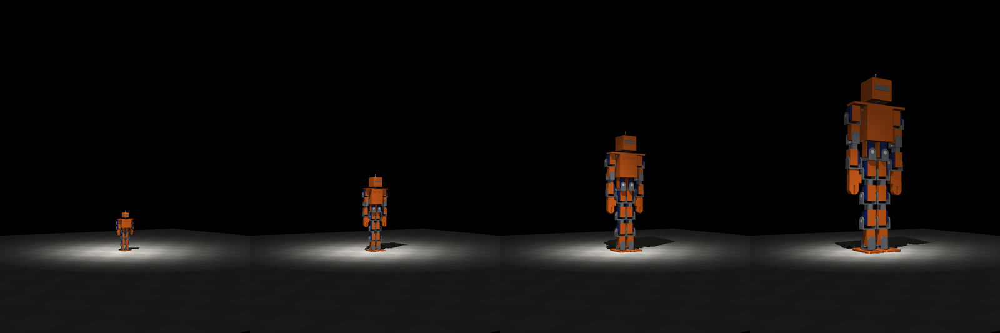

Navitek · N3 · document de concept · 9 novembre 2026
Un humanoïde de 1,5 m : ce qui s'imprime, et ce qui ne s'imprime pas.
N3 est le but de la série, pas un projet de construction. Ce document dit ce qu'on a trouvé, ce qu'une simulation simplifiée donne comme couple, et surtout ce qu'on ne sait pas. Aucune CAO de N3 n'existe, rien n'est construit.

Un document, pas un plan de fabrication. Il fixe ce qu'il faut prouver avant de construire.
Chaque chiffre dit sa source ou dit qu'il est une estimation. Les fourchettes de coût viennent de sites spécialisés et d'analystes, pas de devis.
N3 n'est pas « entièrement imprimé »
Entièrement réimprimable pour sa structure, achetée pour le reste
| Pièce | Pourquoi on l'achète |
|---|---|
| Roulements, axes, goupilles, visserie | La précision et la dureté que le plastique n'a pas. Même les actionneurs imprimés du Berkeley Humanoid Lite utilisent roulements, inserts et vis du commerce. |
| Moteurs sans balais | Du cuivre, des aimants, de l'acier de stator : un stator qui n'est pas en tôles d'acier ne fonctionne pas (forum SimpleFOC). |
| Réducteurs de hanche et de genou | Les couples demandés (plus bas) dépassent ce que des réducteurs imprimés ont été vus tenir ; pas de donnée de durée de vie. |
| Batterie et sa protection, variateurs, carte, capteurs, caméra, câbles | De la chimie et de l'électronique. |
| Pièces très chargées (bassin, fémur, pied, cadre du torse) | Le plastique y est limite : PLA de 43,5 à 59 MPa en traction selon la source, nylon chargé de carbone 74,5 MPa dans une étude ; aucune donnée de compression relevée. Des renforts en métal là où il le faut. |
| Structure, carters, membres | S'impriment et se réimpriment. C'est la partie qui reste fidèle à la mission : une pièce cassée se refait. |
La sécurité d'un robot de taille adulte
Aucune norme publiée ne dit où est la limite
ISO 13482:2014, la norme des robots de soins personnels, dit elle-même que pour les impacts « aucune donnée exhaustive et reconnue internationalement, par exemple des limites de douleur ou de blessure, n'existe ». ISO 25785-1, pour les robots à stabilité activement commandée (les humanoïdes en font partie), vise les milieux industriels où le public est exclu ; son stade est donné de façon contradictoire par nos sources (projet de comité ou projet de travail) et il faut le vérifier sur le site de l'ISO. Navitek N3 ne se dira donc jamais « conforme ». Il prend des précautions, et refuse de marcher près de gens tant qu'elles ne sont pas toutes en place :
- Un arrêt d'urgence matérielqui coupe la puissance sans passer par un logiciel.
- Une limite de couple et de vitessedans chaque variateur, et des actionneurs qu'on retourne à la main.
- Des cartersaux endroits qui pincent ; une batterie avec protection et fusible ; une masse aussi basse que possible (le modèle simulé pèse environ 27 kg).
- Des premiers essais sur un portiquesans public ni enfant, jamais seul.
Ce que coûtent les actionneurs
Des ordres de grandeur d'analystes, pas des devis
Dans un actionneur rotatif de robot humanoïde, un fournisseur donne la répartition du coût : le réducteur harmonique environ 36 %, le capteur de couple 30 %, le moteur sans cadre 13,5 %. Un réducteur harmonique haut de gamme se chiffre à 800 à 1 500 $ ; un jeu planétaire à un cinquième environ ; les actionneurs planétaires à faible rapport de l'Unitree G1 seraient autour de 300 $ pièce (estimation d'un site, pas un prix de catalogue) ; à l'autre bout, un actionneur imprimé ouvert est estimé de 40 à 133 $. Pour 25 articulations, cela donne de l'ordre de 1 000 $ (tout imprimé) à plusieurs dizaines de milliers de dollars (hanches et genoux harmoniques avec capteur de couple). Ce n'est pas un prix : c'est l'étendue de ce qu'on ne sait pas.
Le couple à 1,5 m, selon une simulation simplifiée
Le robot de N1 agrandi · couple en N·m · cahier R-042
Le modèle est le robot de N1 agrandi à 1,5 m (structure plus légère d'un facteur 0,6 par hypothèse, 900 g par actionneur et 3,5 kg de pile et d'électronique, estimés), à 17 articulations (ni les mains ni la rotation de la hanche ne sont modélisées), avec des actionneurs sans limite de couple : on mesure ce que le mouvement demande. La loi d'échelle (couple proportionnel à la masse et à la longueur) prévoit environ 2,7 fois les couples de N2 ; elle se vérifie sur la statique :
| Genou | N2 : genou moyen / pic | N3 : genou moyen / pic |
|---|---|---|
| 40° | 1,6 / 2,6 | 4,8 / 6,2 |
| 70° | 2,8 / 5 | 8 / 12 |
| 90° | 3,6 / 6,8 | 9,8 / 16,4 |
Accroupi sur deux jambes. Moyen sur la dernière seconde, pic après la mise en place.
En marche, la même marche à quinze réglages que pour N1, cherchée trois fois, demande ceci à la jambe gauche (couple moyen en valeur absolue / pic, en N·m) :
| Graine | Avance, 12 s | Fin | Hanche, côté | Hanche, avant | Genou | Cheville, avant | Cheville, côté |
|---|---|---|---|---|---|---|---|
| 1 | 29 cm | debout | 34 / 130 | 20 / 141 | 32 / 158 | 39 / 200 | 19 / 155 |
| 2 | 34 cm | debout | 7 / 19 | 8 / 34 | 8 / 34 | 12 / 49 | 6 / 23 |
| 3 | 117 cm | debout | 42 / 119 | 8 / 38 | 8 / 31 | 8 / 27 | 15 / 39 |
Les bras demandent au plus 12,8 N·m. La hanche de côté monte à 19 à 130 N·m au pic : une articulation qu'aucun réducteur imprimé trouvé n'approche, et qui dit qu'un robot de cette taille balance son poids de côté avec beaucoup de force. Les marches sont réglées sur le modèle lui-même, avec des actionneurs qui n'ont pas de limite : un robot réel marcherait autrement.
Ce que N3 ne prouve pas
- Des tâches de maison.Aucune n'est simulée. Les mains à tendons ne sont pas conçues.
- La résistance, la durée de vie, l'échauffementdes actionneurs : aucune donnée.
- Un prix, une CAO, une nomenclature.Rien de cela n'existe.
- La sécurité.Aucune norme ne la fixe. Nous ne la prétendons pas.
Et avant tout ça
Le chemin passe par N0 (à imprimer, 33 cm), N1 (63 cm, servos à bus, à mesurer puis imprimer) et N2 (un mètre, un actionneur imprimé à mesurer sur un banc). Chaque version ne sort que si la précédente a tenu en simulation, puis sur le banc.
Les fichiers
Licence CC BY 4.0 : refaites les essais chez vous
Document de concept : tout peut changer à la première mesure.
Vous travaillez sur la sécurité ou les actionneurs ?
Dites-nous ce que vous savez des limites de couple et de vitesse d'un robot qui marche près de gens, ou des durées de vie de réducteurs imprimés. Ce sont deux trous de ce document.
Écrire à Yoan ou appelez : 514 926-8633Navitek N0 · Navitek N1 · Navitek N2 · La méthode · Retour à l'accueil